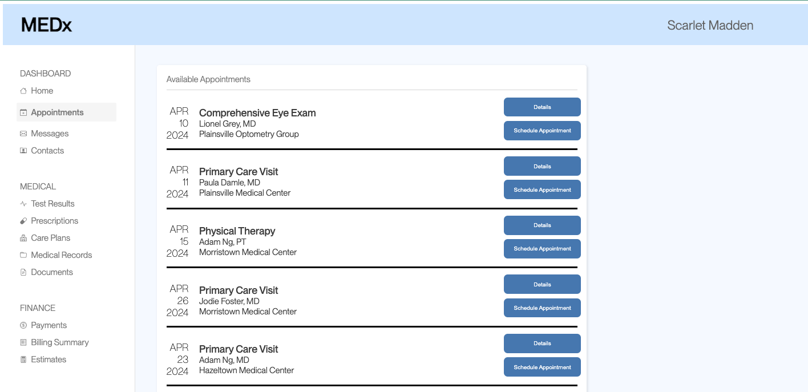

A/B Testing
Overview
To imitate real-life A/B testing, I was assigned a pre-designed medical scheduling interface (Version A) and was tasked to implement small edits into a duplicate interface (Version B) and compare how users navigate each interface.
Version A

Version B
I made the following changes in Version B:
- Added black bars underneath each appointment to separate them more easily
- Darkened the button colors to increase contrast
- Removed profile picture
- Changed the phrase “See appointment” or “Details”
In order to measure the differences in their navigation of each versions, I analyzed three key metrics – their misclick rate, the amount of time spent on each page, and the distance their mouse traveled on the page – in order to gauge if one version was more comprehensible or understandable than the other.
This study was a within-subjects study: a group of students were given a task (to schedule an appointment with a certain doctor on a specific day and location) on both versions and these metrics were tracked as they interacted with the interface. Most interacted with Version A first before moving to Version B. For all tests, we had a total of 34 users for Version A and 27 users for Version B.
Misclick Rate
The misclick rate is a simple boolean for whether the user did or did not misclick the right appointment on the page.
Hypothesis
Null Hypothesis: There is no difference between the distribution of users who have misclicked on Version A and the distribution of those who have misclicked on Version B.
Alternative Hypothesis: The distribution of users who have misclicked on Version A will be greater than the distribution of those who have misclicked on Version B.
I predict I’ll be able to reject this null: Version B’s button “See Appointment” (which, on first glance, looks extremely similar to “Schedule Appointment) was changed to read “Details” instead, which should allow the user to more easily distinguish between the two options and avoid clicking the wrong button, even if for the correct date. if Version B is cleaner and easier to read, then hopefully the user will be able to find the right appointment more easily and not mislick.
Statistical Results
Because the misclick rate is measured as a boolean, the misclick rate is a categorical variable – they either did or did not misclick. Thus, we would need to run a chi-square test to analyze this data.
Our analysis tells us that, if the null is true, we’d expect 5.02 of the 34 participants to mislick on Version A and 3.98 to misclick on Version B: not very far from the actual outcomes of 7 and 2 participants respectively.
Further analyzing our data, we can see our degrees of freedom is only 1, since we only have 2 groups (Sample A and Sample B users) who can only fit into 2 categories (did or did not misclick). Our chi-squared (the difference between our expected and actual outcomes) is 2.079. With a df of 1 and a desired p-value of 0.05, we’d want a chi-squared value of 3.84; however, since our chi-squared value is higher than that, we cannot reject the null. This is further supported by our p-value of 0.15, which means can be expected around 15% of the time given the null is true; since this is much higher than the desired p-value of 0.05, we cannot reject the null (that both versions have a similar misclick rate) at this time.
Summary
-
At this point, we cannot claim that there is a difference between the distribution of misclick rates in Versions A and B. Because the buttons to schedule the appointment are in the same place between the versions, it’s possible that users were well aware of where to click after looking at either site.
Time Spent on Page
The metric was the amount of time spent on the page, measured in milliseconds.
Hypothesis
Null Hypothesis: There is no difference between the time spent on Version A’s page and the time spent on Version B.
Alternative Hypothesis: The time spent on Version A’s page is longer than the time spent on Version B.
I predict I’ll be able to reject this null: Version B also changed the word “See Appointment” (which, on first glance, looks extremely similar to “Schedule Appointment) to “Details” – this hopefully makes the distinction between the buttons easier to see and less time-consuming for the user to find the appropriate desired button. I predict I’ll be able to reject this null; again, if Version B is easier to navigate, users should be spending less time on Version B’s page and should be able to successfully make an appointment faster.
Statistical Results
Time is a continuous variable, so we’d use a t-test to compare the difference in time between Version A and Version B. Since our alternative hypothesis predicts that Version B will have a shorter average time spent on the page than Version A, our hypothesis is directional; thus, we’d need to use a 1 tailed t-test.
Our analysis tells us that users spent an average of 12860 milliseconds on Version A, and 11312 milliseconds on Version B. While it seems that this supports our alternative hypothesis that Version B would have a shorter average time spent on page, we can see that our t-score is 0.31 – which means the magnitude of difference between our two versions is pretty small. Ideally, we’d want an absolute t-score of at least 2 to reject our null. Version A’s variance is 140609949 while B’s is 575071824.9 – these values are indicating that the diversity in our data is extremely high.
Ultimately, we’d want a p-value of 0.05 in order to confidently reject our null hypothesis; but because our p-value is roughly .62, that means the probability of getting these results while the null is true is 62% – thus, at this time we cannot reject our null hypothesis that there is no difference in time spent on page between Version A and Version B.
Summary
-
At this time, we cannot reject our null hypothesis. We need to factor in the fact that, because this is a within-subjects design, participants would have seen both versions, mainly starting with A; thus, familiarity with the interface would have lent to the shorter average time on page for B. But even though (on average) users spent less time on Version B than Version A, the difference is not enough to be significant. From here, we could infer that Version B is not easier to read or navigate than Version A; however, we’d ideally have a larger sample size to confirm.
Distance Mouse Moved
The third metric is the distance the mouse has moved on the page, measured in pixels.
Hypothesis
Null Hypothesis: The distance the mouse has been moved will be the same between versions A and B.
Alternative Hypothesis: The distance the mouse has been moved will not be the same between versions A and B.
I’m not confident that I will reject the null here. As stated earlier, Version B is a little less distracting than Version A: I’ve taken away the photo at the top right (which was distracting as it grabbed the viewer’s attention unnecessarily), which hopefully focuses their attention and mouse movements on the appointments. I’ve created lines separating the appointments so hopefully there’s less confusion about which appointments relate to which specific buttons, so they can find their information with their mouse faster with less movement. However, I predict users will be navigating the page with their eyes mostly (trying to find the location of the right appointment) rather than navigating with their mouse to see what’s interactable. I predict there will not be a significant difference between the versions.
Statistical Results
Distance in pixels is also a continuous variable, so we’d need another t-test. Because our alternative hypothesis this time isn’t directional (we’re just predicting a change overall, but unsure if one will be greater or less than the other), we’re going to need a 2-tailed t-test.
Our analysis tells us that users moved an average distance of 4007 pixels on Version A, and an average distance of 2578 pixels on Version B. We also have a variance of 6401849.35 for A and 139065.6 for B, both of which are extremely high – our data is very scattered – but immediately we can tell that this difference is pretty significant: very clearly users on Version B are moving a little more than half the pixel distance of Version A. If we have a t-score with an absolute value greater than 2, we know our results are significant: and since our t-score is -3.25, we know our findings for Version B are 3.25 standard deviations away from Version A.
Additionally, our p-value is 0.0026, meaning there is a 0.26% chance that we’d find these results given the null hypothesis was true. Because this is much less than the 0.05 needed to reject the null hypothesis, we can successfully reject the null hypothesis and state that our data is statistically significant, and supports the alternative hypothesis that there is a difference between distance the mouse has moved in Version A in comparison to Version B.
Summary
-
Oftentimes we may “read” a page through moving our mouse: thus, if Version B was cleaner and easier to understand, the user may not need to “read” as much of it. Alternatively, since this was a within-subjects design, and because most participants had viewed Version A before B, they may already have an understanding of where their desired button is located and thus needed to move the mouse less in order to find it.
Conclusion
Overall, we were not able to reject our null hypotheses regarding the difference in misclick rate and the time spent on page between Versions A and B; however, we were able to reject the null hypothesis for the difference in the pixel distance the mouse was moved with a p value of 0.0026. My best understanding is that, because users interacted with both A and B, their familiarity with A’s design impacted their ability to find the desired schedule button on Version B. But even so, it’s important to isolate and test the impact of the small changes (like increased button contrast or wording) in a user’s ability to navigate a webpage. Even knowing something is insignificant is important information.